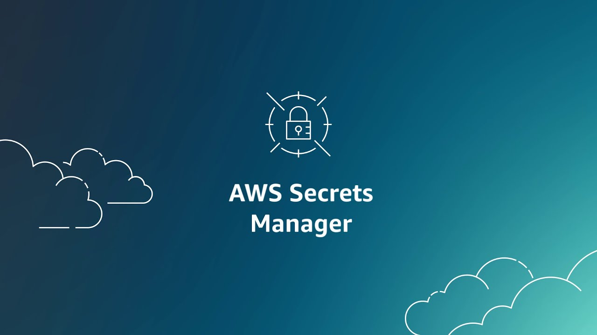
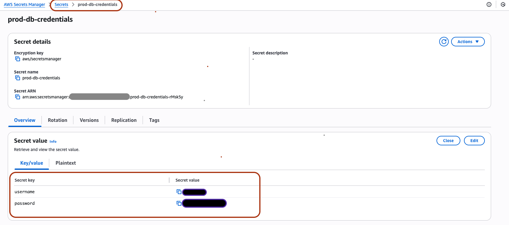
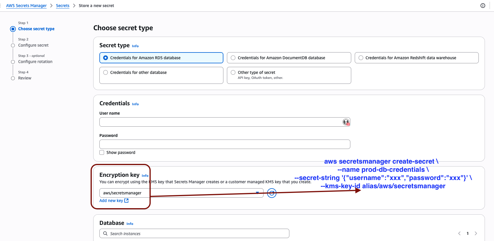
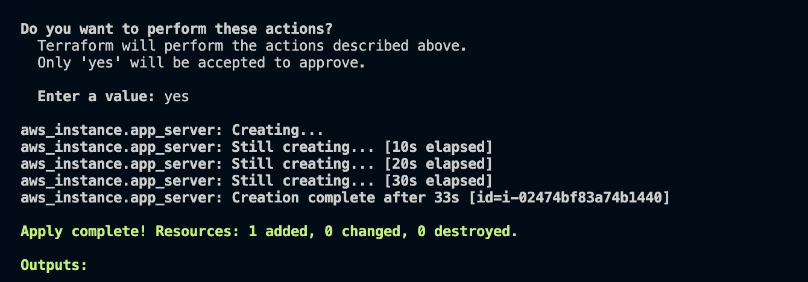
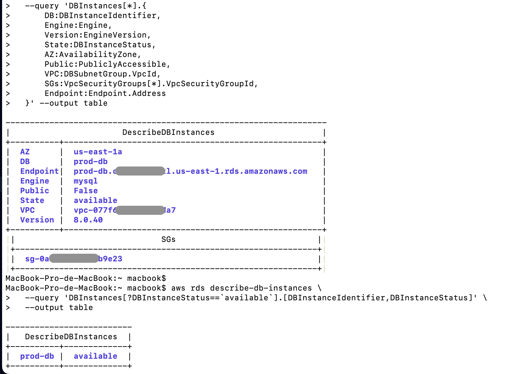

Injection sécurisée des identifiants AWS Secrets Manager dans votre stack Terraform & Node.js
18 Juin 2025, 17:00 CEST
Devops
Sécurisez vos identifiants de base de données avec AWS Secrets Manager
Dans l’article précédent, nous avons configuré une connexion RDS avec EC2 optimisée via Terraform. Aujourd’hui, nous allons renforcer la sécurité de votre application en déportant les identifiants de base de données du code Terraform vers AWS Secrets Manager. Suivez ce guide pour éliminer les secrets codés en dur et adopter les bonnes pratiques de sécurité.
1. Pourquoi déplacer les identifiants vers AWS Secrets Manager ?
Coder en dur un mot de passe de base de données dans Terraform ou dans votre application expose ces informations à des risques via l’historique Git, les journaux CI, ou les fichiers d’état Terraform. AWS Secrets Manager stocke les secrets chiffrés avec KMS, permet de tracer les accès, et prend en charge la rotation automatique.
2. Créer (ou localiser) le secret
Créez un secret dans AWS Secrets Manager avec la commande suivante :
aws secretsmanager create-secret \
--name prod-db-credentials \
--secret-string '{"username":"yourDBUsername","password":"yourDBpassWord"}'
Via la console AWS → Secrets Manager → Secrets, recherchez prod-db-credentials pour vérifier son existence. Cliquez sur Récupérer la valeur du secret pour voir le JSON.

Astuce : tu peux spécifier une KMS encryption key dans la commande AWS CLI secretsmanager create-secret via le paramètre --kms-key-id

3. Récupérer le secret dans Terraform
3.1 Ajouter une data source
data "aws_secretsmanager_secret_version" "db" {
secret_id = "prod-db-credentials" # nom ou ARN
}
locals {
creds = jsondecode(data.aws_secretsmanager_secret_version.db.secret_string)
}
La fonction jsondecode convertit la chaîne JSON en une map utilisable dans Terraform : vous pouvez appeler local.creds.username et local.creds.password.
3.2 Passer les valeurs au module RDS
module "rds_mysql" {
source = "../../"
identifier = "prod-db"
engine_version = "8.0.40"
instance_class = "db.t4g.micro"
allocated_storage = 50
username = local.creds.username
password = local.creds.password
subnet_ids = module.vpc.public_subnet_ids
vpc_id = module.vpc.vpc_id
source_cidr_blocks = [module.vpc.vpc_cidr_block]
}
Puisque le mot de passe provient désormais de Secrets Manager, vous pouvez supprimer la variable password ou lui attribuer une valeur par défaut pour éviter les prompts interactifs.
4. Injecter les secrets dans le script EC2 (User Data)
user_data = base64encode(templatefile("${path.module}/user_data.sh", {
rds_endpoint = module.rds_mysql.db_instance_endpoint,
db_username = local.creds.username,
db_password = local.creds.password
}))
Remplacez les références var.username / var.password restantes par les valeurs de local.creds.
Pour le changement de code Terraform, voici le lien GitHub : Voir la Pull-Request
5. Lancer le pipeline
terraform init # télécharge les providers
terraform validate # détecte les erreurs de syntaxe
terraform plan # aucun prompt interactif ; champs sensibles masqués
terraform apply # déploie ou met à jour les ressources

Si AWS a mis à jour la version de MySQL, verrouillez engine_version sur la version actuelle (ex : 8.0.40) car RDS interdit les rétrogradations.
6. Utiliser le même secret dans votre application Node.js
// connection.js
const mysql = require('mysql');
const { SecretsManagerClient, GetSecretValueCommand } =
require('@aws-sdk/client-secrets-manager');
const region = process.env.AWS_REGION || 'us-east-1';
const name = process.env.SECRET_NAME; // prod-db-credentials
const client = new SecretsManagerClient({ region });
let cache;
async function getCreds() {
if (cache) return cache;
const cmd = new GetSecretValueCommand({ SecretId: name });
const { SecretString } = await client.send(cmd);
cache = JSON.parse(SecretString);
return cache;
}
async function initPool() {
const c = await getCreds();
return mysql.createPool({
connectionLimit: 10,
host: c.host || process.env.DB_HOST,
user: c.username,
password: c.password,
database: c.database,
ssl: { rejectUnauthorized: true }
});
}
module.exports = { initPool };
Pour voir le code de l’application Todo Node, voici le lien GitHub : Voir le code
Le SDK récupère la version AWSCURRENT une seule fois par conteneur ou exécution Lambda et la réutilise pour éviter des appels API supplémentaires.
Vous pouvez voir l’état de votre instance attachée à RDS :

7. Liste de bonnes pratiques
| Domaine | Recommandation |
|---|---|
| Sécurité d’état | Stockez l’état Terraform dans S3 + KMS pour garantir le chiffrement au repos. |
| Rotation | Activez la rotation dans Secrets Manager ou mettez à jour avec random_password. Terraform lit automatiquement AWSCURRENT. |
| Hygiène des variables | Supprimez les variables inutilisées. Pour les facultatives, définissez une valeur par défaut. |
| Versions mineures | Verrouillez uniquement la version majeure (8.0) pour permettre les mises à jour automatiques. |
8. Conclusion
En déportant la gestion des identifiants vers AWS Secrets Manager et en les décodant dans Terraform et Node.js, vous éliminez les secrets codés en dur, gardez vos plans Terraform non interactifs et bénéficiez d’une rotation automatique native — avec seulement quelques lignes de code supplémentaires.